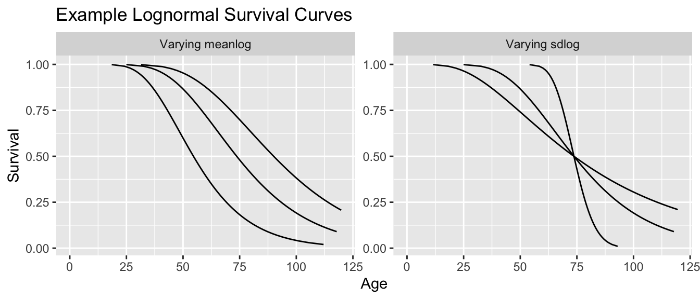
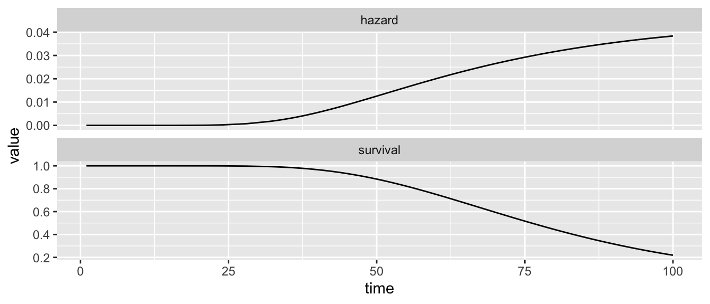

Lognormal
If \(Z\) follows a Normal distribution, then \(Y \sim \exp(Z)\) follows a Lognormal distribution (since then \(\log(Y)\) follows a Normal distribution). The Lognormal can be used in survival analysis because it is defined on non-negative numbers. In fact, it is a common choice for modeling human mortality.
The Lognormal distribution is characterized by two parameters: meanlog and sdlog, which correspond to the mean and standard deviation of the log survival time. These two parameters can define many possible curves.
Data
On this page, we will explore the lognormal to model mortality in the deaths.csv data, which I simulated from 2023 age-specific mortality rates.
deaths <- read_csv("https://ilundberg.github.io/eventhistory/assets/deaths.csv")The time variable is age and in these data every unit experiences the event (died = 1 in every row).
Estimate
We can fit a Lognormal model using the survreg function, as with other distributions.
lognormal_model <- survreg(
Surv(age, event = died) ~ 1,
data = deaths,
dist = "lognormal"
)Predict parameters
In this model, the mean of the log of \(Y\) is modeled by the linear predictor \(\text{E}(\log(Y)\mid\vec{X} = \vec{x}) = \vec{x}'\vec\beta\) and the standard deviation of the log of \(Y\), \(\text{SD}(\log(Y)\mid\vec{X})\) is the scale parameter lognormal_model$scale which is assumed by the model to be the same at all values of \(\vec{X}\) (as in homoskedastic linear regression).
meanlog <- predict(lognormal_model, type = "linear")
sdlog <- lognormal_model$scalePredict hazard and survival
You can use the plnorm, dlnorm, and qlnorm functions to simulate quantities of interest given meanlog and sdlog. The process is analogous to previous models we have learned. For simplicity, here we use the viz_survreg() function that I wrote.
source("https://ilundberg.github.io/eventhistory/assets/viz_survreg.R")lognormal_model |> viz_survreg()
Nearly everyone survives at younger ages, and then people gradually die at older ages.
We can also compare the fit to a Kaplan-Meier curve to assess the validity of the parametric assumptions.
source("https://ilundberg.github.io/eventhistory/assets/km_compare.R")lognormal_model |> km_compare()
In this case the fit is not that perfect: the model underestimates survival at roughly ages 50–80 and overestimates survival after age 80. On the next page, we will get a closer fit with a piecewise Exponential model.